Weekly Product Report
2026-W31
Hệ thống đọc đơn nghỉ phép và tăng ca từ DOCX, PDF hoặc ảnh. File có lớp chữ được đọc trực tiếp; ảnh và bản scan dùng OCR local rồi chuyển cho người kiểm tra khi chưa đủ chắc chắn.
Quyết định hiện tại
| Hạng mục | Trạng thái | Bằng chứng |
|---|---|---|
| Đọc trực tiếp DOCX/PDF | Sẵn sàng local | Hai biểu mẫu đạt đầy đủ trường bắt buộc trong bộ kiểm thử đã phê duyệt. |
| Ảnh camera và PDF scan | Cần người kiểm tra | 6/6 tài liệu được xử lý và phân loại, nhưng chất lượng trường chưa đạt ngưỡng tự động. |
| Luồng nghiệp vụ production | Chưa triển khai | API hiện chỉ chạy trên máy local. Chưa có thao tác ghi sang HRIS hoặc quy trình production. |
Hai biểu mẫu HCNS bằng dữ liệu tổng hợp
Các tài liệu dưới đây do AI tạo, không đại diện cho người thật. Cột kết quả là output thật của engine khi xử lý chính file bên cạnh, không phải đáp án chuẩn được chép sang.
Đơn nghỉ phép
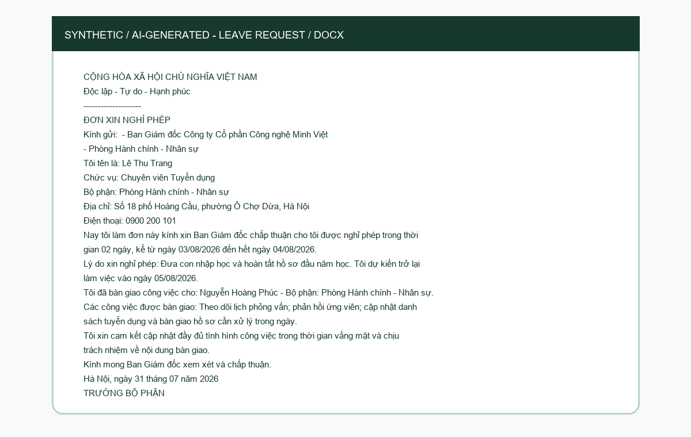
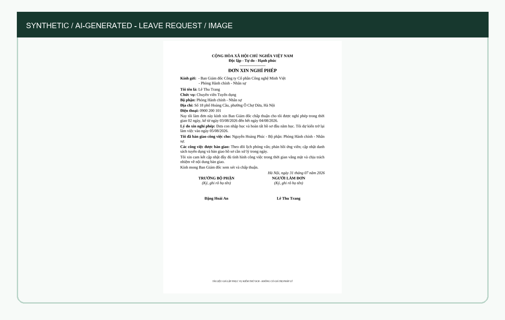
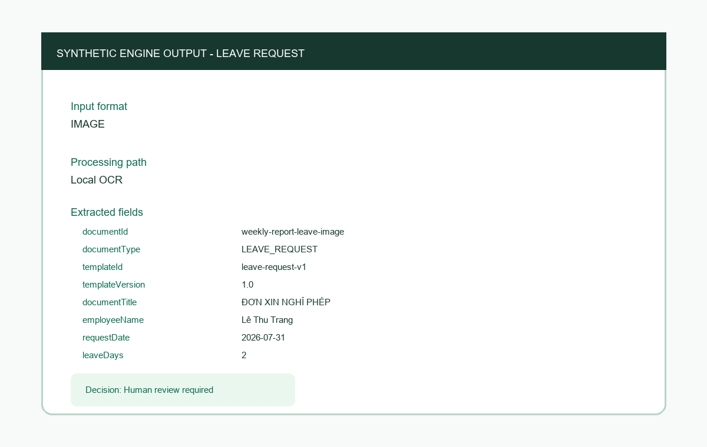
Đơn tăng ca
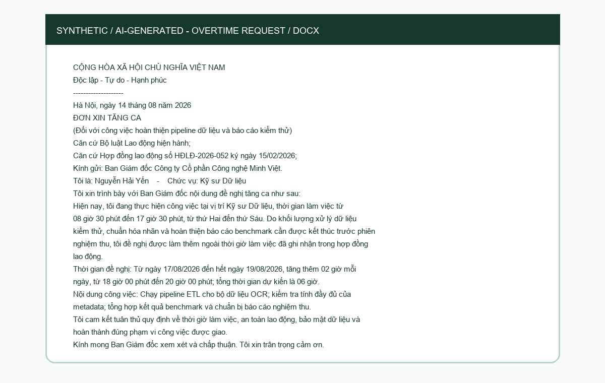
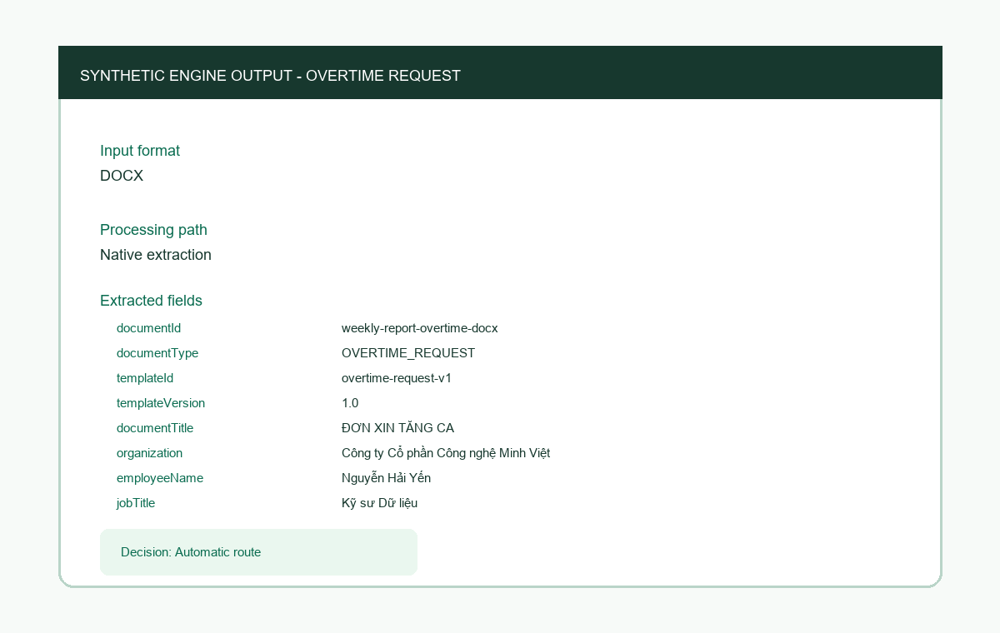
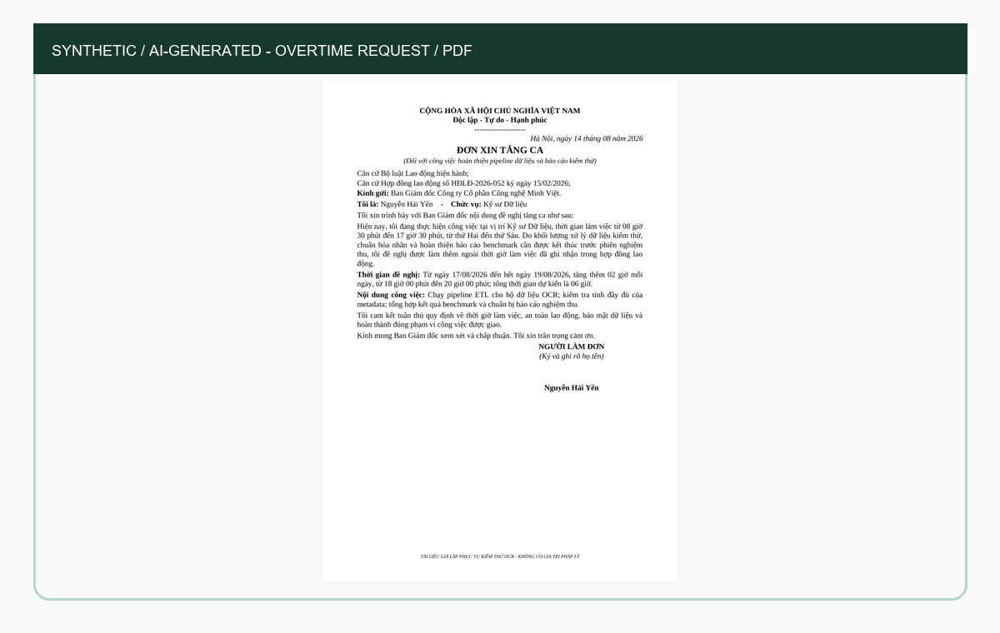
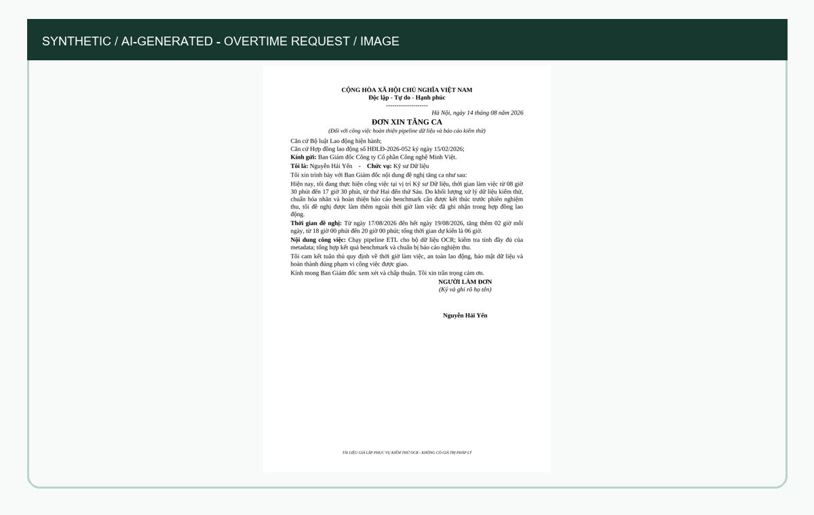
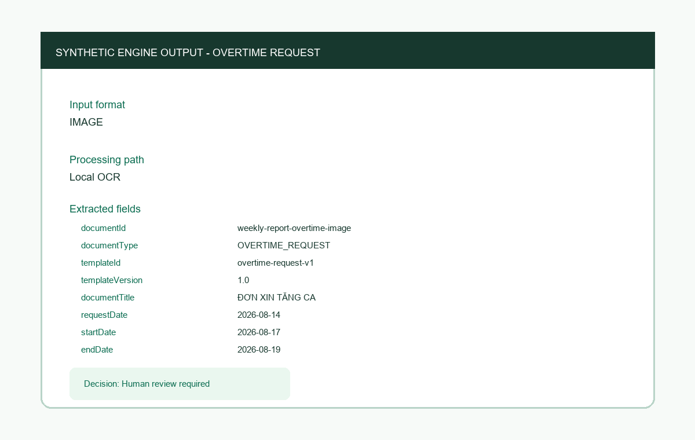
Ảnh chụp trực tiếp từ LOCAL REAL-DOCUMENT EVIDENCE
PDF được render thành ảnh trang đầu, ảnh scan hiển thị trực tiếp và inspector schema/JSON bên phải vẫn giữ nguyên.
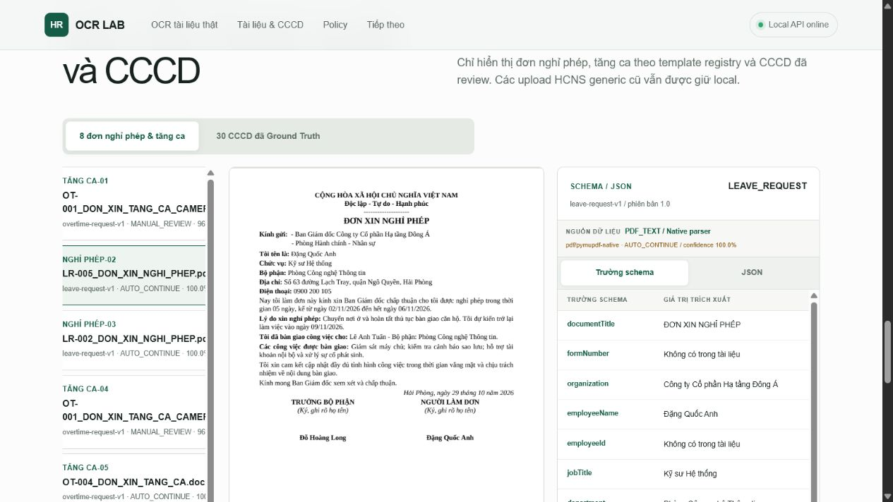
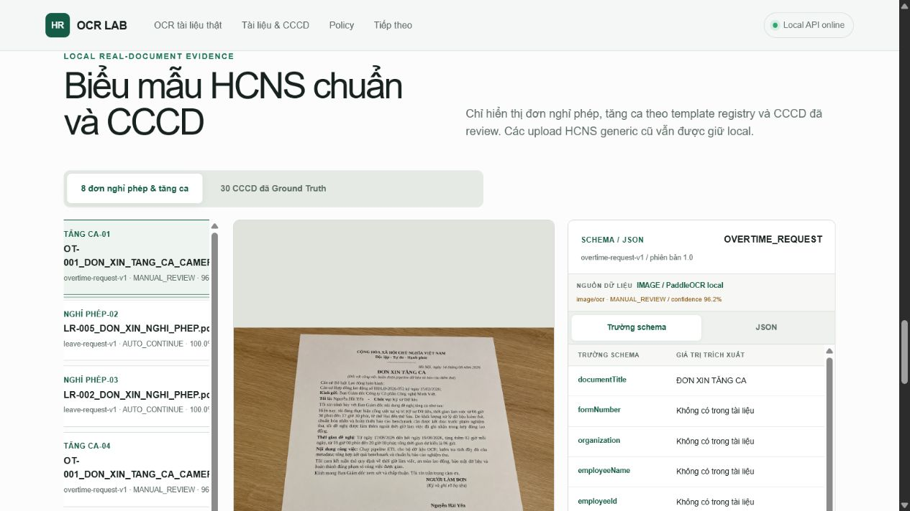
CCCD tổng hợp và Prediction JSON
Hai ảnh dưới đây do người dùng cung cấp và được xác nhận là dữ liệu AI-generated. JSON là Prediction của engine local; Ground Truth không được dùng làm output.
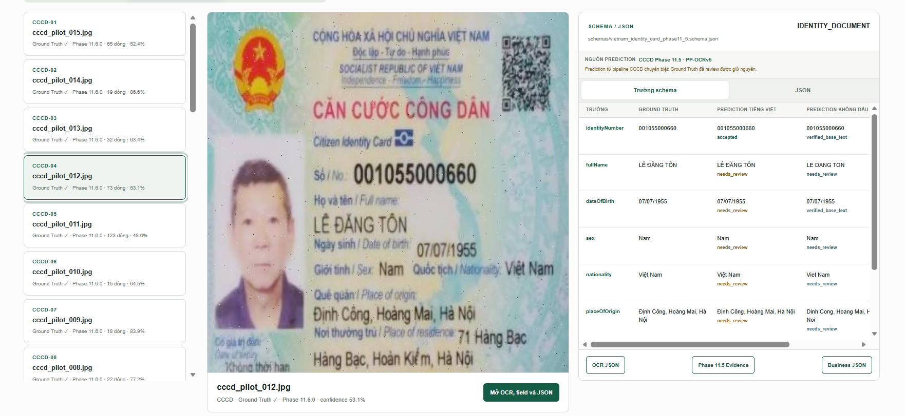
cccd_pilot_012.jpg · Prediction JSON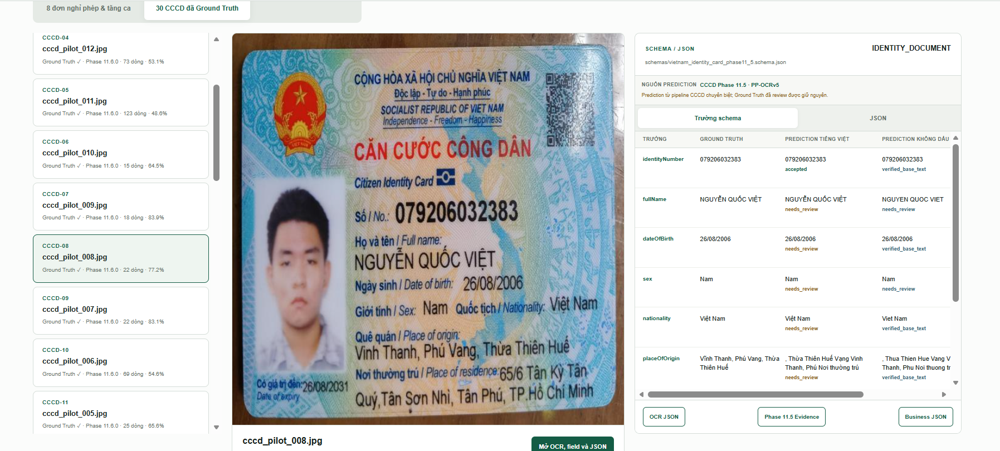
cccd_pilot_008.jpg · Prediction JSONXem Prediction JSON tóm tắt
{
"cccd_pilot_012.jpg": {"identityNumber": {"value": "001055000660", "confidence": 0.402644, "status": "accepted"}, "fullName": {"value": "LÊ ĐĂNG TÔN", "confidence": 0.866262, "status": "needs_review"}, "dateOfBirth": {"value": "07/07/1955", "confidence": 0.58525, "status": "needs_review"}, "dateOfExpiry": {"value": null, "confidence": 0.0, "status": "not_found"}},
"cccd_pilot_008.jpg": {"identityNumber": {"value": "079206032383", "confidence": 0.448701, "status": "accepted"}, "fullName": {"value": "NGUYỄN QUỐC VIỆT", "confidence": 0.731844, "status": "needs_review"}, "dateOfBirth": {"value": "26/08/2006", "confidence": 0.77347, "status": "needs_review"}, "dateOfExpiry": {"value": "26/08/2031", "confidence": 0.486915, "status": "accepted"}}
}Bằng chứng sản phẩm local
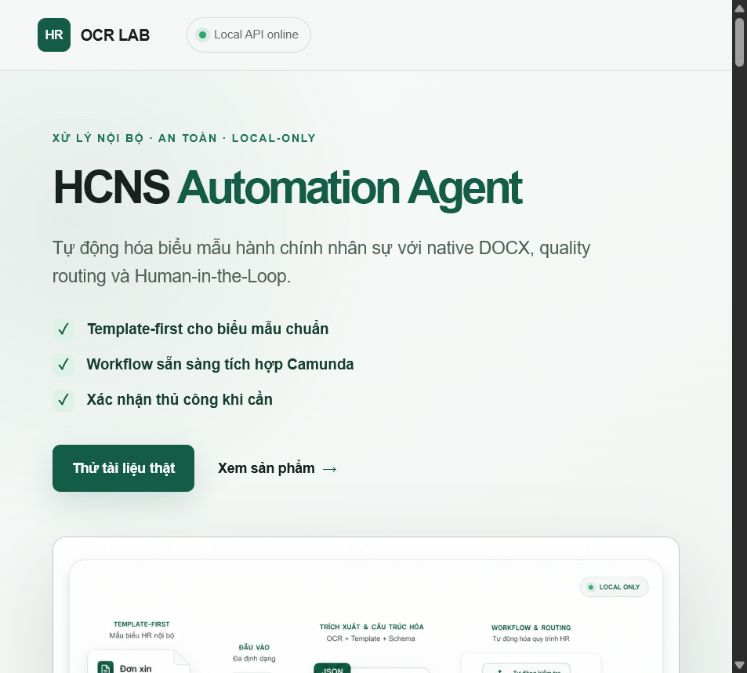
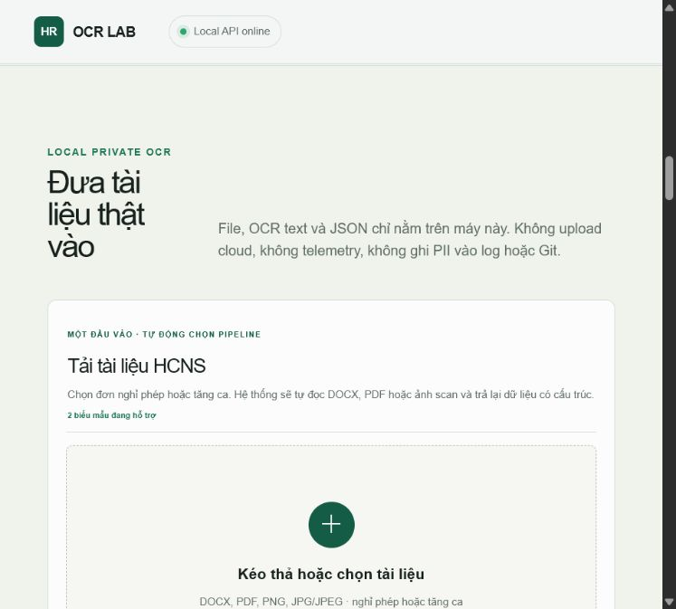
Quy tắc dữ liệu trong báo cáo
Hai ảnh CCCD trong report được phân loại là AI-generated theo xác nhận của người dùng. Prediction JSON được tách khỏi Ground Truth và các trường chưa chắc chắn vẫn giữ trạng thái cần người kiểm tra.
Danh sách bằng chứng có thể kiểm tra trong assets/evidence-index.json. Kiểm tra an toàn chạy bằng python scripts/validate_weekly_report.py.
Ưu tiên tiếp theo
Tiếp tục phân loại lỗi theo từng trường và đọc lại vùng dữ liệu liên quan trên bộ phát triển. Ảnh và scan vẫn cần người kiểm tra đến khi đạt ít nhất 44/54 trường bắt buộc mà không làm mất các trường vốn đã đúng.